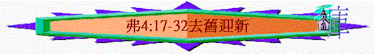

引言
～試找出在4:22-24中的三個主要動詞字眼
脫去、改換、穿上
～有沒有參加過謝師宴? 你會在儀表上會花上什麼心思及時間?
為什麼?
今天我們信主的人是來到神面前過一個更新的人生及生活，究竟我們在心思及行為上又需要脫去、改換、穿上什麼事情？讓我們從弗4:17-32看一看
一.不效法外邦人(4:17-19)
1.4:17中,保羅有什麼勸勉?
不要像外邦人
2.4:17-19提及外邦人的心如何?
何謂虛妄? 即虛空,
徒勞, 無目的, 短暫
3.何謂昏昧?
內心變黑暗
何謂心裡剛硬?
何謂良心喪盡? 良心麻木,
沒有感受,做不好的事,良心也沒感覺的
4.4:19又提到他們的心既是如此,行為又會怎樣?
何謂私慾? 過份的慾念
5.你有沒有發現今天社會裡,也有些人他們的心也是虛妄、昏昧、剛硬、良心麻木及行為也是放縱的?
何以見得?
二.新人應有改變(4:20-24)
1.4:20提及學了基督,學了是什麼意思?是否未學、未知?
從那裡學? 從道與真理
2.記不記剛信主時,你在那裡接受栽培?
當時最深刻學習到什麼事?
3.既然學了基督,4:22要我們怎樣?
4.脫去是什麼意思?
為何要脫去從前行為上的舊人? 你未信主前,你的舊人有什麼敗壞的地方?
5.4:23又提到要有什麼改變?
何謂心志? MIND:心智、心思、思維、態度
6.未信主前,我們有什麼不好的心思或價值觀?
7.4:24
又提到信主後,我們應怎樣? 這新人有什麼特質?
何謂真理? TRUTH真誠,可靠
何講仁義?
righteousness
公正, 正義, 公平,行為詳神的標準
何謂聖潔?
Holiness
神聖,分別,敬虔,沒罪
8.你最想穿上是什麼事(真理/仁義/聖潔)?
為什麼?
三.新人應有表現(4:25-32)
1.既然我們有以上脫去及穿上的改變,4:25提到我們在生活中應有什麼實質的轉變表現?
2.何謂棄絕?
擺脫, 擱置一旁
為什麼我們要對鄰舍說實話? 一家人通常怎相處?是否常欺騙對方?
3.你認為在生活中易不易說謊言?
我們又如何作一個誠實的人?
4.另外4:29又提到我們的言語要怎樣?污穢的言語一句也不可出
今天在你的學校環境中,多不多聽到污穢的言語? 你又否參與?
5.4:26又提到什麼事?
生氣為何會引致犯罪(可參考4:31
人在放縱情緒時引發不好的事)?不可含怒到日落是什麼意思?
不控制情緒的人為何會給魔鬼留地步(可參考創4:1-8該隱不控制自己對兄弟亞伯的怒氣就殺了亞伯的例子)
?
6.4:28又提及什麼事?
人為何想偷竊? 因不想作正經事,想不經正常努力而得一些自己想擁有的東西
何謂正經事?
有用的,有益的事,如親手作工得工價
為何我們要作正經事? 可分給缺乏的人
6.4:30當一個信徒在言語及情緒上有不好的表現時,聖靈會怎樣?
擔憂
7.4:32又提到我們應怎對一些會令我們發怒的人?
何謂恩慈? KIND,GRACE
8.為何要饒恕人?
試分享你一次饒恕人的經歷或體會